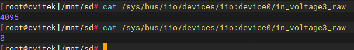

11. ADC 操作指南¶
本文档说明在 CV184x 平台上通过 IIO 接口使用 SARADC、通道与 sysfs 节点对应关系、电压换算及用户态/内核态操作示例。
11.1. 操作准备¶
1. 内核要求
使用 SDK 提供的内核镜像。
2. ADC 与通道说明
用户层通过 IIO 接口访问 15 路 12-bit ADC 通道，参考电压 1.5V。
芯片内共有 5 组 SARADC，每组 3 路 12-bit 通道：
SARADC0～SARADC2：常规 ADC（共 9 路）
RTC_SARADC0～RTC_SARADC1：RTC 域 ADC（共 6 路）
3. IIO 设备路径与通道对应关系
IIO 设备路径为 /sys/bus/iio/devices/iio:device0/，各通道对应的原始值节点如下：
in_voltage1_raw ～ in_voltage3_raw # SARADC0
in_voltage4_raw ～ in_voltage6_raw # SARADC1
in_voltage7_raw ～ in_voltage9_raw # SARADC2
in_voltage10_raw ～ in_voltage12_raw # RTC_SARADC0
in_voltage13_raw ～ in_voltage15_raw # RTC_SARADC1
4. 电压计算公式
电压（mV）= 原始值 × 1500 / 4095
5. 引脚与功能切换
SARADC0 通道 3 对应的引脚名称为 ADC3；可采用默认 GPIO 功能，无需切换：
cvi_pinmux -r ADC3
RTC_SARADC0 通道 10 对应引脚 PWR_SEQ3；需切换为 GPIO 功能，例如：
cvi_pinmux -r PWR_SEQ3 cvi_pinmux -w PWR_SEQ3/PWR_GPIO_5
11.2. 操作流程¶
步骤 1：硬件连接
确认所用 ADC 通道对应的物理引脚（可参考原理图）。
将待测电压源接到对应引脚，注意输入电压不得超过参考电压 1.5V。
保证参考电压稳定。
步骤 2：引脚配置
常规 ADC 通道（SARADC0～2）一般无需额外 pinmux。
RTC 域 ADC（RTC_SARADC0/1）或需将对应引脚配置为 ADC 功能，或需切回 GPIO 时，使用
cvi_pinmux进行切换。
步骤 3：数据读取
用户态：通过
/sys/bus/iio/devices/iio:device0/下对应的in_voltageN_raw节点读取原始值。
步骤 4：数据处理
读取原始值后，用公式「电压（mV）= 原始值 × 1500 / 4095」换算为电压。
按需做滤波、校准等后处理。
11.3. 操作示例¶
11.3.1. 读取 SARADC0 通道 1 并换算电压¶
# 读取原始值
cat /sys/bus/iio/devices/iio:device0/in_voltage1_raw
# 示例输出：2048
# 电压（mV）= 2048 × 1500 / 4095 ≈ 750
说明：开发板原理图中 ADC 常按通道标号（如 SARADC1～9 对应上述 SARADC0～2 的 9 路，PWR_SARADC1～6 对应 RTC_SARADC0/1 的 6 路），具体以原理图为准。
11.3.2. SARADC0 通道 3 与 RTC_SARADC0 通道 10 读取示例¶
可用万用表对比：将通道接 1.8V 或接地（注意原始值最大为 4095，换算电压最大为 1.5V）。
cat /sys/bus/iio/devices/iio:device0/in_voltage3_raw
cat /sys/bus/iio/devices/iio:device0/in_voltage10_raw
# 接地时读数应接近 0
{kind=link}

11.3.3. 内核态 ADC 读写示例¶
步骤 1：在设备树中为需要配置ADC通道的节点添加ADC通道属性
my-adc-consumer@0 {
compatible = "myco,my-adc-consumer";
io-channels = <&saradc0 0>; /* 0 表示通道 0，范围 0～14 */
status = "okay";
};
步骤 2：在驱动中申请ADC通道并读取ADC值
struct my_adc_consumer {
...
struct iio_channel *chan;
...
};
static int my_adc_consumer_probe(struct platform_device *pdev)
{
struct my_adc_consumer *priv;
int ret, val;
priv = devm_kzalloc(&pdev->dev, sizeof(*priv), GFP_KERNEL);
if (!priv)
return -ENOMEM;
/* 获取 ADC 通道 */
priv->chan = devm_iio_channel_get(&pdev->dev, NULL);
if (IS_ERR(priv->chan)) {
dev_err(&pdev->dev, "iio_channel_get failed: %ld\n", PTR_ERR(priv->chan));
return PTR_ERR(priv->chan);
}
/* 读取原始值 */
ret = iio_read_channel_raw(priv->chan, &val);
if (ret < 0) {
dev_err(&pdev->dev, "read raw failed: %d\n", ret);
return ret;
}
dev_info(&pdev->dev, "ADC raw value: %d\n", val);
...
}
11.3.4. 用户态 ADC 读写示例¶
以下示例通过 IIO sysfs 读取指定通道的原始值并换算为电压（mV）。通道 1～15 对应 in_voltage1_raw``～``in_voltage15_raw，电压公式：电压（mV）= 原始值 × 1500 / 4095。用法：./程序名 <通道号>，通道号 1～15。
1#include <stdio.h>
2#include <stdlib.h>
3#include <fcntl.h>
4#include <unistd.h>
5#include <string.h>
6#include <errno.h>
7
8#define ADC_PATH "/sys/bus/iio/devices/iio:device0/"
9#define MAX_CHANNELS 15
10
11float read_adc_voltage(int channel)
12{
13 char path[256];
14 char buf[32];
15 int fd, raw;
16 float voltage;
17
18 if (channel < 1 || channel > MAX_CHANNELS) {
19 fprintf(stderr, "Invalid channel: %d (1-%d)\n", channel, MAX_CHANNELS);
20 return -1.0;
21 }
22
23 snprintf(path, sizeof(path), "%sin_voltage%d_raw", ADC_PATH, channel);
24
25 fd = open(path, O_RDONLY);
26 if (fd < 0) {
27 fprintf(stderr, "Failed to open %s: %s\n", path, strerror(errno));
28 return -1.0;
29 }
30
31 memset(buf, 0, sizeof(buf));
32 if (read(fd, buf, sizeof(buf) - 1) < 0) {
33 fprintf(stderr, "Failed to read %s: %s\n", path, strerror(errno));
34 close(fd);
35 return -1.0;
36 }
37
38 close(fd);
39
40 raw = atoi(buf);
41 voltage = (raw * 1500.0) / 4095.0;
42
43 return voltage;
44}
45
46int main(int argc, char *argv[])
47{
48 int channel;
49 float voltage;
50
51 if (argc != 2) {
52 printf("Usage: %s <channel>\n", argv[0]);
53 printf("Channels: 1-15\n");
54 printf(" 1-3: SARADC0\n");
55 printf(" 4-6: SARADC1\n");
56 printf(" 7-9: SARADC2\n");
57 printf(" 10-12: RTC_SARADC0\n");
58 printf(" 13-15: RTC_SARADC1\n");
59 return 1;
60 }
61
62 channel = atoi(argv[1]);
63 voltage = read_adc_voltage(channel);
64
65 if (voltage >= 0) {
66 printf("Channel %d: %.2f mV (%.3f V)\n",
67 channel, voltage, voltage / 1000.0);
68 }
69
70 return 0;
71}
运行方式说明
保存源码：将上述代码保存为文件，例如
adc_read.c。编译：在宿主机或目标板上使用对应工具链编译。示例（目标板为 ARM 时请替换为实际交叉编译器）：
# 交叉编译示例（以实际工具链为准） arm-none-linux-uclibcgnueabihf-gcc -o adc_read adc_read.c -static运行：在目标板上执行，传入通道号 1～15。无参数或参数错误时会打印用法与通道对应关系。
./adc_read <通道号>
示例：
./adc_read 1 # 读取 SARADC0 通道 1 ./adc_read 10 # 读取 RTC_SARADC0 通道 10 ./adc_read # 打印用法：Channels 1-15，及 1-3/4-6/7-9/10-12/13-15 对应关系
输出：成功时打印该通道电压，如
Channel 1: 750.00 mV (0.750 V)；失败时在 stderr 输出错误信息。